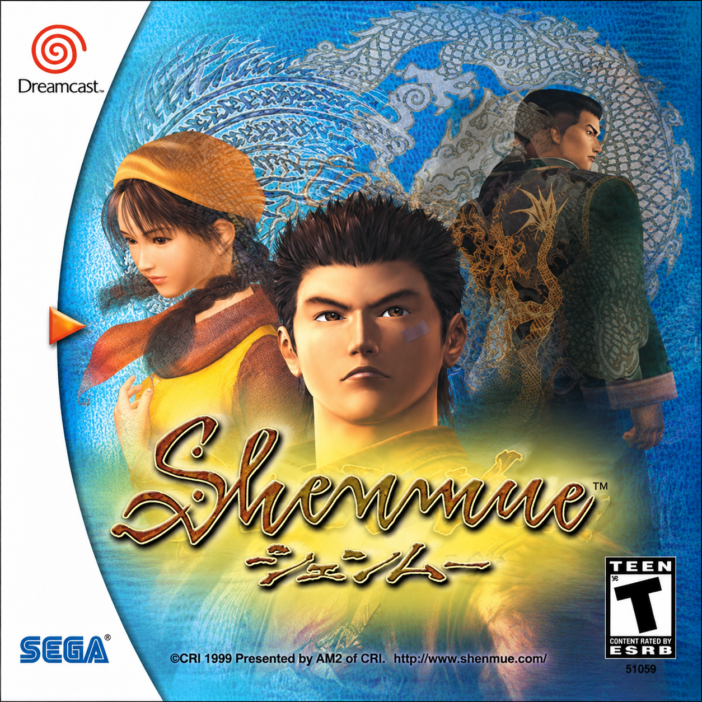

An Ambitious Vision for the Dreamcast

Released in 1999 for the Sega Dreamcast, Shenmue was a multi-textured adventure game developed by Yu Suzuki. It follows the story of hero Ryo Hazuki as he sets out on a revenge journey to locate the person responsible for the murder of his father in 1980’s Yokosuka, Japan.
Shenmue’s detailed environments, interactive world, and large development budget made it one of the most complex video games of its time. Wikipedia